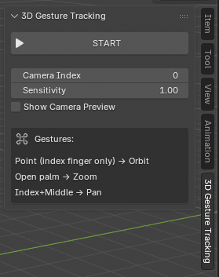

3D viewport control based on hand gestures for easy and fun viewing. This add-on utilizes your webcam and advanced hand tracking technology (MediaPipe) to translate specific hand gestures into camera movements within the Blender 3D viewport.
Supported Gestures
Orbit
Point (index finger only)
Zoom
Open palm
Pan
Index + Middle fingers
Interface & Integration

Seamlessly integrated as a panel in the Viewport Sidebar.
Features
- Intuitive Control: Maps natural hand gestures to complex camera actions (Orbit, Zoom, Pan).
- Real-Time Tracking: Uses MediaPipe for high-accuracy, low-latency hand landmark detection.
- Dynamic Feedback: Provides an (optional) live camera preview showing the hand skeleton and the detected gesture.
- Easy Setup: Includes a dependency management system to automatically guide users through installing required libraries.
Pre-requisites
- Blender: Version 5.0 or newer.
- Python Libraries: opencv, mediapipe, msvc-runtime (auto-installer available).
- Operating System: Windows 8.1 or newer, macOS 11 Big Sur or newer.
Installation & Usage
1. Install
- Download the latest .zip from the releases.
- Drag-and-drop the .zip into the Blender viewport.
- Click
Okon theInstall from Diskdialog.
2. Setup
- First time usage requires installing dependencies. The tool auto-installs for you with one click.
- Make sure you selected the correct camera and that it has a big enough FOV.
3. Use
- Click
START. - Follow the tooltip to use the gesture tracking!